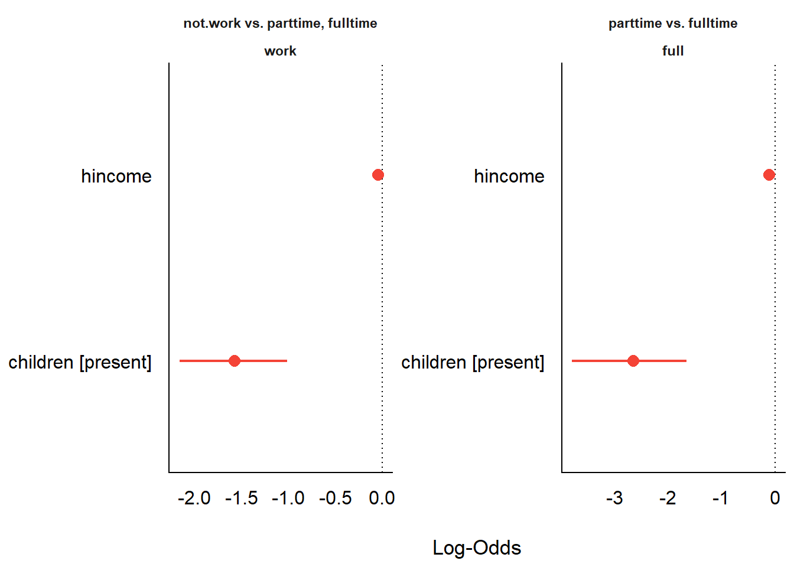
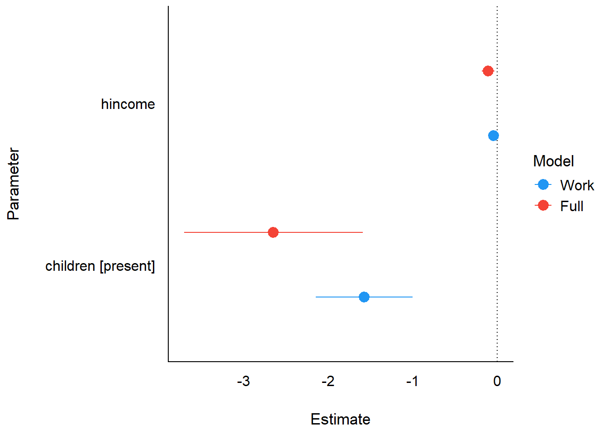
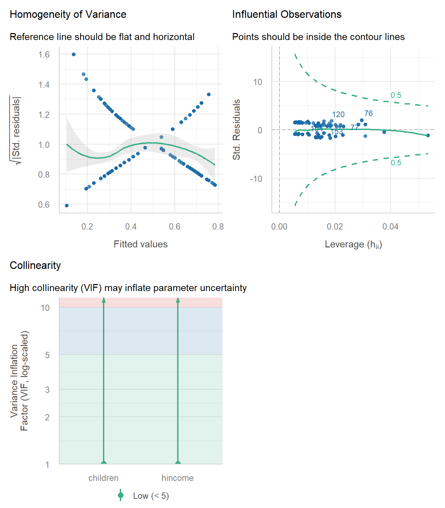
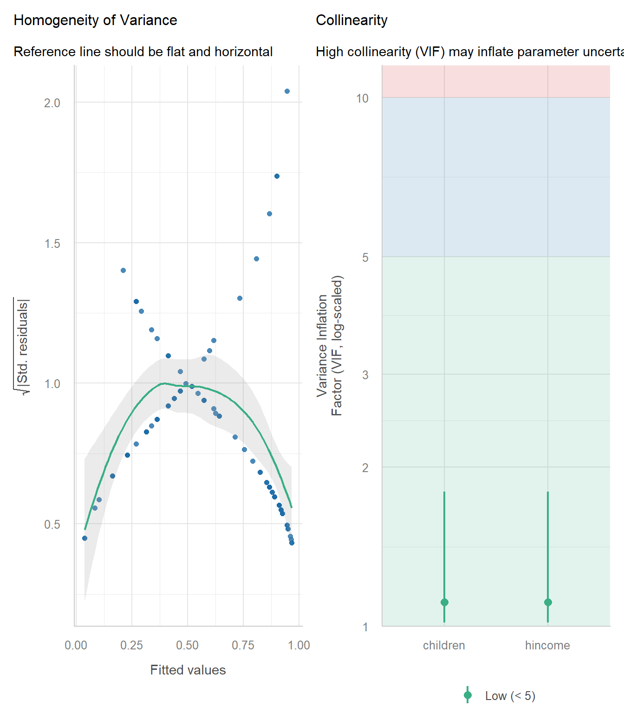
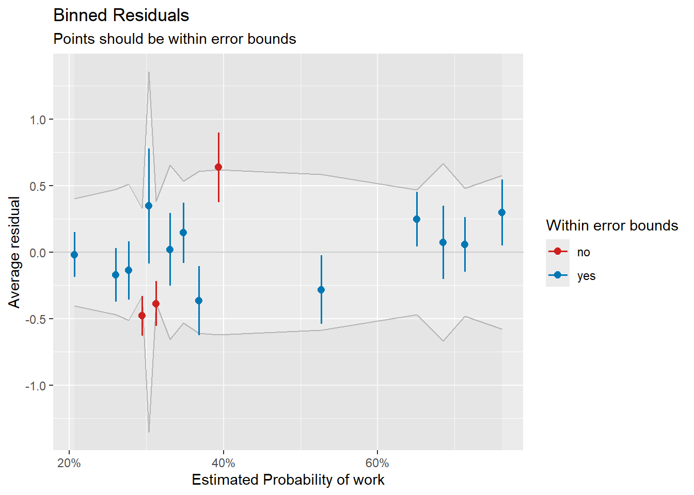
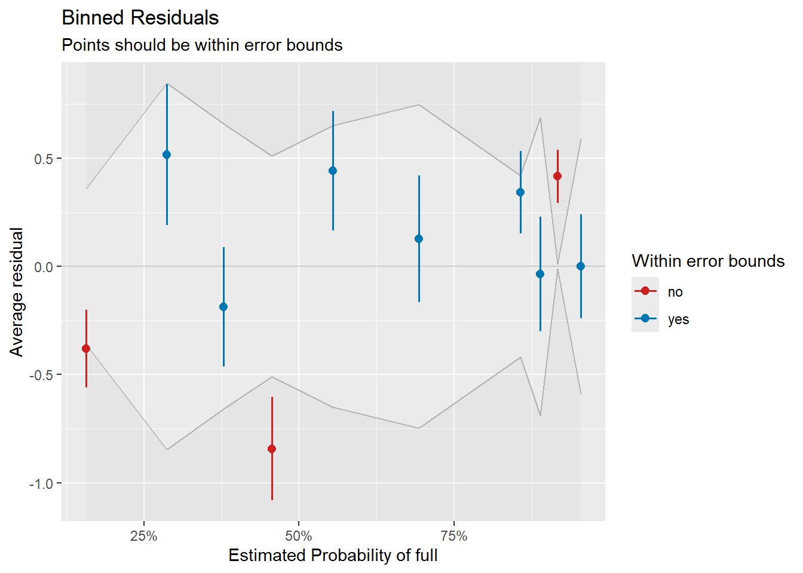

Using easystats with nestedLogit models
Michael Friendly
2026-03-03
Source:vignettes/articles/easystats.Rmd
easystats.RmdOverview
The easystats
project (easystats2022?)
is a collection of R packages that provides a unified, consistent
framework for working with statistical models. Three of its core
packages offer direct support for "nestedLogit"
objects:
- insight (R-insight?): Extracts model information — formulas, data, parameters, variance-covariance matrices — through a unified interface.
- parameters (R-parameters?): Computes and formats model parameter tables with confidence intervals, standardized coefficients, and bootstrap estimates.
- performance (R-performance?): Calculates model performance indices such as R-squared measures and fit statistics.
These packages work by iterating over the individual binary logit
sub-models that comprise a nested dichotomy model, combining the results
into tidy tables with a Response column identifying each
dichotomy. This means you get a unified view of all dichotomies without
having to process them individually.
Additionally, the see package provides
plot() methods for the output of parameters
and performance, enabling visual summaries like forest
plots.
This vignette describes some ways to enhance what is available in the nestedLogit package using easystats capabilities.
Load the packages we’ll use here:
library(nestedLogit) # Nested Dichotomy Logistic Regression Models
library(insight) # Easy Access to Model Information
library(parameters) # Processing of Model Parameters
library(performance) # Assessment of Regression Models Performance
library(see) # Visualisation Toolbox for easystats
library(ggplot2) # Data Visualisations Using the Grammar of GraphicsWomen’s labor force participation
We use the standard Womenlf example. The response
partic has three categories — not working, working
part-time, and working full-time — modeled as nested dichotomies against
husband’s income and presence of young children.
Model information with insight
The insight package provides accessor functions that
work uniformly across many model types. For nestedLogit
models, these extract information from the overall model and, where
applicable, from each dichotomy sub-model.
Model type and formula
model_info() retrieves information about a given model.
The model family (binomial) and link function (logit) are recorded, as
well as various is_* properties.
info <- insight::model_info(wlf.nested)
names(info)
#> [1] "is_binomial" "is_bernoulli" "is_count" "is_poisson"
#> [5] "is_negbin" "is_beta" "is_betabinomial" "is_orderedbeta"
#> [9] "is_dirichlet" "is_exponential" "is_logit" "is_probit"
#> [13] "is_censored" "is_truncated" "is_survival" "is_linear"
#> [17] "is_tweedie" "is_zeroinf" "is_zero_inflated" "is_dispersion"
#> [21] "is_hurdle" "is_ordinal" "is_cumulative" "is_multinomial"
#> [25] "is_categorical" "is_mixed" "is_multivariate" "is_trial"
#> [29] "is_bayesian" "is_gam" "is_anova" "is_timeseries"
#> [33] "is_ttest" "is_correlation" "is_onewaytest" "is_chi2test"
#> [37] "is_ranktest" "is_levenetest" "is_variancetest" "is_xtab"
#> [41] "is_proptest" "is_binomtest" "is_ftest" "is_meta"
#> [45] "is_wiener" "is_rtchoice" "is_mixture" "link_function"
#> [49] "family" "n_obs" "n_grouplevels"The relevant values here are:
info$is_binomial
#> [1] TRUE
info$family
#> [1] "binomial"
info$link_function
#> [1] "logit"find_formula() returns the model formula. With
dichotomies = TRUE, it returns the formula for each
sub-model:
insight::find_formula(wlf.nested)
#> $conditional
#> partic ~ hincome + children
#>
#> attr(,"class")
#> [1] "insight_formula" "list"
insight::find_formula(wlf.nested, dichotomies = TRUE)
#> $work
#> $conditional
#> work ~ hincome + children
#>
#> attr(,"class")
#> [1] "insight_formula" "list"
#>
#> $full
#> $conditional
#> full ~ hincome + children
#>
#> attr(,"class")
#> [1] "insight_formula" "list"Parameters and data
find_parameters() lists all parameter names across the
dichotomies:
insight::find_parameters(wlf.nested)
#> $conditional
#> [1] "(Intercept)" "hincome" "childrenpresent"get_varcov() returns the variance-covariance matrix for
each sub-model. The component argument lets you select a
specific dichotomy:
insight::get_varcov(wlf.nested)
#> $work
#> (Intercept) hincome childrenpresent
#> (Intercept) 0.147274 -0.0058877 -0.0645454
#> hincome -0.005888 0.0003913 0.0003901
#> childrenpresent -0.064545 0.0003901 0.0854176
#>
#> $full
#> (Intercept) hincome childrenpresent
#> (Intercept) 0.58846 -0.025136 -0.286297
#> hincome -0.02514 0.001533 0.006708
#> childrenpresent -0.28630 0.006708 0.292762Model parameters with parameters
Basic parameter table
The model_parameters() function produces a formatted
summary of all coefficients across the dichotomies. The printed output
includes estimates, standard errors, confidence intervals, and test
statistics. The data structure contains a Response column
identifying which dichotomy each row belongs to:
mp <- model_parameters(wlf.nested)
mp
#> # {not.work} vs. {parttime, fulltime} response
#>
#> Parameter | Log-Odds | SE | 95% CI | z | p
#> ----------------------------------------------------------------------
#> (Intercept) | 1.34 | 0.38 | [ 0.61, 2.12] | 3.48 | < .001
#> hincome | -0.04 | 0.02 | [-0.08, 0.00] | -2.14 | 0.032
#> children [present] | -1.58 | 0.29 | [-2.16, -1.01] | -5.39 | < .001
#>
#> # {parttime} vs. {fulltime} response
#>
#> Parameter | Log-Odds | SE | 95% CI | z | p
#> ----------------------------------------------------------------------
#> (Intercept) | 3.48 | 0.77 | [ 2.11, 5.14] | 4.53 | < .001
#> hincome | -0.11 | 0.04 | [-0.19, -0.04] | -2.74 | 0.006
#> children [present] | -2.65 | 0.54 | [-3.80, -1.66] | -4.90 | < .001Plot of coefficients
The see package provides a plot() method
for parameter tables, producing a forest plot of the coefficient
estimates with confidence intervals. This is intended to give a visual
comparison of the effects across the two dichotomies.
There is a small incompatibility to work around:
-
see::plot.parameters_model()internally passesResponsecolumn values togsub()as regular expression patterns. - The curly-brace notation that
nestedLogituses to label multi-category dichotomy sides (e.g.,{parttime} vs. {fulltime}) contains{and}characters that are invalid regex quantifiers, causing an error. - Stripping the braces before plotting resolves this:

Forest plot of model coefficients from model_parameters().
Note that the two predictors are on very different scales:
hincome is a continuous variable (measured in thousands of
dollars) while children is binary (present/absent). This
makes direct visual comparison of their coefficient sizes within the
same panel potentially misleading. The model_parameters()
function offers a standardize = "refit" argument that
re-fits the model on z-scored predictors, which would put all
coefficients on a common standard-deviation scale.
Unfortunately, this option does not currently produce a visibly
different result for nestedLogit objects, suggesting that
standardization is not yet fully propagated through the nested
structure. Until this is resolved, the compare_parameters()
approach in the next section — which works directly on the individual
glm sub-models — is more reliable for visual
comparison.
Comparing dichotomies
compare_parameters() places the estimates from different
sub-models side by side, making it easy to see how the same predictors
operate differently across the nested dichotomies. Here we extract the
individual glm sub-models using models() and
compare them:
cp <- compare_parameters(models(wlf.nested, "work"),
models(wlf.nested, "full"),
column_names = c("Work", "Full"))
cp
#> Parameter | Work | Full
#> ----------------------------------------------------------------
#> (Intercept) | 1.34 ( 0.58, 2.09) | 3.48 ( 1.97, 4.98)
#> hincome | -0.04 (-0.08, 0.00) | -0.11 (-0.18, -0.03)
#> children [present] | -1.58 (-2.15, -1.00) | -2.65 (-3.71, -1.59)
#> ----------------------------------------------------------------
#> Observations | 263 | 108There is a plot method for the result, which plots the coefficients for the two sup-models in a single plot.
plot(cp)
Comparison of coefficients across the two dichotomy sub-models.
Bootstrap confidence intervals
model_parameters() supports bootstrap-based inference.
This re-fits the model on resampled data to produce non-parametric
bootstrap confidence intervals, which can be more robust than the
default Wald intervals for smaller samples:
model_parameters(wlf.nested, bootstrap = TRUE, iterations = 500)
#> # Fixed Effects
#>
#> Parameter | Log-Odds | 95% CI | p
#> ---------------------------------------------------------
#> (Intercept).work | 1.34 | [ 0.61, 2.18] | < .001
#> hincome.work | -0.04 | [-0.09, 0.00] | 0.044
#> childrenpresent.work | -1.60 | [-2.24, -1.08] | < .001
#> (Intercept).full | 3.55 | [ 2.34, 5.43] | < .001
#> hincome.full | -0.11 | [-0.19, -0.05] | < .001
#> childrenpresent.full | -2.72 | [-4.23, -1.75] | < .001Model performance with performance
Performance summary
model_performance() provides a one-line summary of fit
statistics for each dichotomy sub-model, including AIC, BIC, Tjur’s
R-squared, RMSE, and log-likelihood:
model_performance(wlf.nested)
#> # Indices of model performance
#>
#> Response | AIC | BIC | RMSE | Sigma | R2
#> ------------------------------------------------
#> work | 325.7 | 336.4 | 0.456 | 1 | 0.138
#> full | 110.5 | 118.5 | 0.398 | 1 | 0.333R-squared measures
Several R-squared variants are available for logistic regression models. Tjur’s R-squared (also known as the coefficient of discrimination) is the default for binomial models:
r2(wlf.nested)
#> # R2 for Logistic Regression
#> work: 0.138
#> full: 0.333Other R-squared measures provide alternative perspectives on model fit:
r2_nagelkerke(wlf.nested)
#> $work
#> Nagelkerke's R2
#> 0.1743
#>
#> $full
#> Nagelkerke's R2
#> 0.4185
r2_coxsnell(wlf.nested)
#> $work
#> Cox & Snell's R2
#> 0.1293
#>
#> $full
#> Cox & Snell's R2
#> 0.3085Diagnostics for individual dichotomies
While the easystats functions above work on the
nestedLogit object as a whole, some diagnostic tools (such
as check_model()) require a standard glm
object. The models() function extracts individual dichotomy
sub-models, which are ordinary glm objects that work with
the full range of easystats diagnostic tools.
Visual diagnostics with check_model()
performance::check_model() produces a comprehensive set
of diagnostic plots for a glm object, including checks for
influential observations, collinearity, and the distribution of
residuals.
check_model(wlf_work)
Diagnostic plots for the work vs. not-work dichotomy.
check_model(wlf_full)
Diagnostic plots for the full-time vs. part-time dichotomy.
Binned residual plot
For binomial models, performance::binned_residuals()
provides a binned residual plot, a more appropriate residual diagnostic
than raw residuals. Points falling outside the error bounds suggest
potential model misfit.
binned_residuals() requires the binary response variable
to be present as a named column in the model’s data. The sub-models
returned by models() have their call$data
reset to the original dataset (Womenlf), which does not
contain the binary response columns — those were created internally as a
temporary variable during model fitting and were never added back to the
original data. As a result, insight::get_data() cannot find
the response column and errors.
The workaround is to construct small data frames with the binary
response defined explicitly, matching the logic used by
nestedLogit internally:
# work dichotomy: all cases, not.work = 0, parttime or fulltime = 1
df_work <- within(Womenlf, work <- as.integer(partic != "not.work"))
glm_work2 <- glm(work ~ hincome + children, data = df_work, family = binomial)
check_work <- binned_residuals(glm_work2)
plot(check_work)
Binned residual plot for the work vs. not-work dichotomy.
# full dichotomy: workers only, parttime = 0, fulltime = 1
df_full <- subset(Womenlf, partic != "not.work")
df_full$full <- as.integer(df_full$partic == "fulltime")
glm_full2 <- glm(full ~ hincome + children, data = df_full, family = binomial)
check_full <- binned_residuals(glm_full2)
plot(check_full)
Binned residual plot for the full-time vs. part-time dichotomy.
Limitations
The easystats ecosystem provides substantial support for
nestedLogit models through insight,
parameters, and performance. However, some
packages in the ecosystem do not currently support
nestedLogit:
modelbased: Functions like
estimate_expectation()andestimate_prediction()do not work withnestedLogitobjects. For predicted probabilities and marginal effects, use theggeffectspackage instead (seevignette("ggeffects", package = "nestedLogit")).Diagnostic plots:
check_model()does not work directly onnestedLogitobjects, but as shown above, it can be applied to the individualglmsub-models extracted withmodels().
For plotting predicted probabilities of the response categories, see
vignette("ggeffects", package = "nestedLogit"). For fully
customized ggplot2 plots including the dichotomy-level
predictions, see
vignette("plotting-ggplot", package = "nestedLogit").